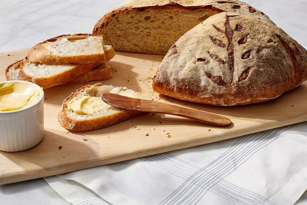
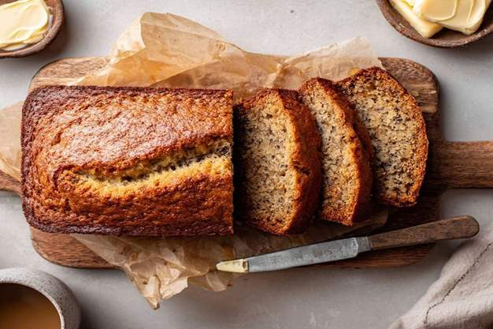
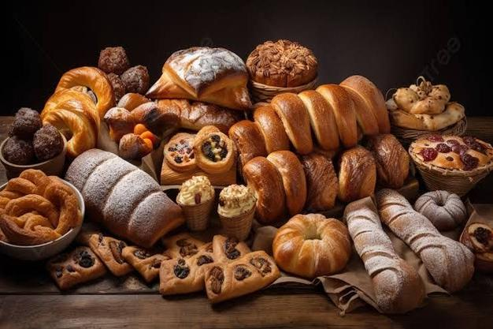

The Journey Of Bread
From wild grains to the loaves we enjoy today
Before Bread Was discovered
Around 14 000 years ago
Long before bread existed, early humans survived by
hunting animals and gathering plants. Among the plants they collected
were wild grains such as wheat and barley. They used large stones to crush
these grains into a coarse flour, then mixed the flour with water to make a
simple paste or porridge. Although this was not bread yet, it was an important
discovery because it showed people that grains could be turned into a filling
and nutritious food. This marked the beginning of humanity's journey towards bread-making.
The First Bread Ever
Around 10 000 years ago
As people learned to grow crops and settle into farming communities,
they experimented with different ways of preparing flour. They discovered that placing
a mixture of flour and water on hot stones or over an open fire produced a flat, cooked
bread. This bread was thin, dense, and chewy because it contained no yeast. Flatbread was
easy to make, required only a few ingredients, and could be carried during travel, making
it one of the earliest staple foods. Even today, many cultures continue to enjoy flatbreads
such as naan, pita, tortillas, and lavash.

The discovery of yeast
Around 6000 years ago
One of the greatest breakthroughs in bread-making happened in Ancient Egypt.
Historians believe that someone accidentally left a bowl of dough uncovered for too long.
Natural yeast, a tiny living microorganism found in the air, settled on the dough and caused
it to ferment. When the dough was baked, it became light, soft, and full of tiny air pockets
instead of remaining flat and dense. This accidental discovery led to the invention of leavened
bread. The Egyptians became highly skilled bakers and even built special ovens to produce bread
more efficiently. Their techniques later influenced many other civilizations.
Bread Spreads
Around 2000 years ago
As trade routes expanded and civilizations interacted with one another, bread-making
techniques spread from Egypt to Ancient Greece, Rome, and many other parts of the world. Each culture
adapted bread to suit its own ingredients, climate, and traditions. In France, bakers developed the
long and crispy baguette. In Italy, breads such as ciabatta became popular. In Eastern Europe, people
created bagels, while in India, naan became a common accompaniment to curries. Bread gradually became
one of the world's most important staple foods, with every region developing its own unique recipes
and baking methods.


Bread Today
Today
Today, bread is made using advanced baking techniques and modern machinery,
allowing bakeries to produce thousands of loaves every day. Commercial yeast helps dough
rise quickly and consistently, while different types of flour and ingredients allow bakers
to create a wide variety of breads. Besides traditional white bread, people now enjoy wholemeal
bread, sourdough, brioche, croissants, gluten-free bread, and many artisan loaves. Bread is no
longer just a basic food—it has become an important part of cultures, celebrations, and cuisines
around the world. Despite the many changes in how it is made, bread remains one of the oldest and
most widely eaten foods in human history.
Fun Fact
Long before rubber erasers, soft white bread was commonly used to erase pencil marks!